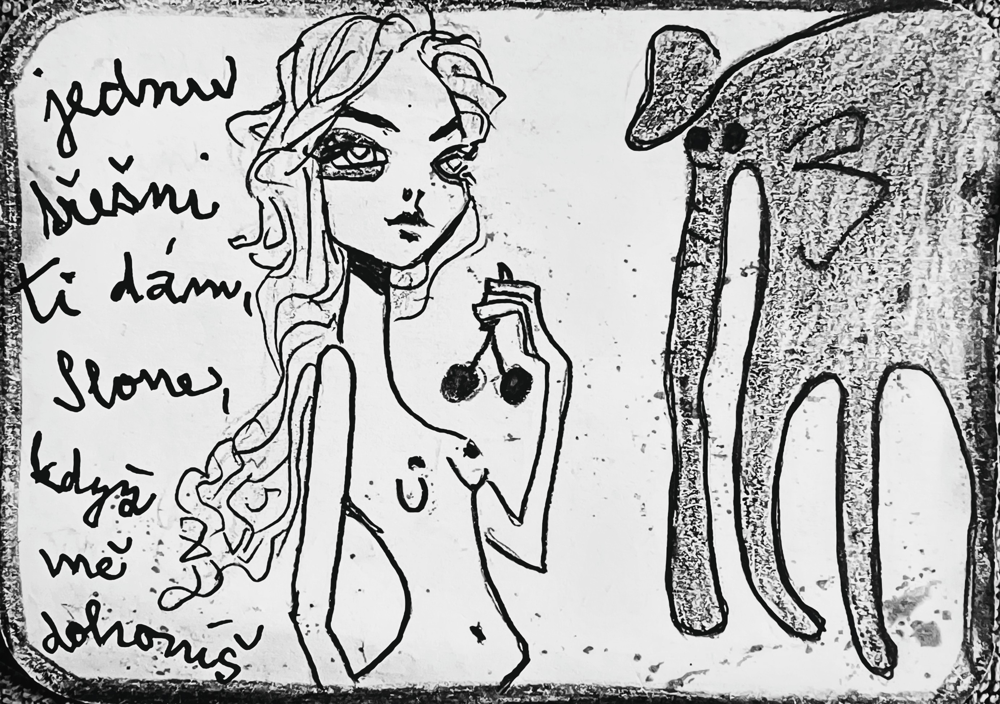

ilustrace · slonFyzika jazyka · Karta Slon
„jednu třešeň ti dám slone, když mě dohoníš"
Slon nese paměť krajin, které už neexistují. Když šel, země se chvěla. Když stál, čas se zpomalil. A přesto — běží za jedinou třešní, kterou nikdy nedostane. Pohádka o Slonovi zkoumá, proč velké věci potřebují malé cíle. A co by zbylo, kdyby ten cíl dosáhly.
Pohádka · čtěte pomalu
Sledujte kde vás text zastaví. Kliknutím na figuru vpravo se označí příslušná místa.
Slon byl velký.
Těžký.
Rozvážný.
Nosil v sobě paměť krajin, které už neexistují.
Když šel, země se chvěla.
Když stál, čas se zpomalil.
A pak přišla ona.
Malá.
Rychlá.
Neuchopitelná.
Možná myš.
Možná vítr.
Možná jen hlas.
„Jednu třešeň ti dám, slone," řekla,
„když mě dohoníš."
Slon se podíval na své nohy.
Na zem.
Na horizont.
A pak se rozběhl.
Ne rychle.
Ale srdcem.
Třešeň byla jedna.
A byla malá.
Byla červená.
Lesklá.
Nedosažitelná.
A slon běžel.
Za chutí.
Za slibem.
Za něčím, co možná ani neexistuje.
Cestou míjel stromy, které si ho pamatovaly.
Řeky, které ho kdysi chladily.
Kamínky, které kdysi se mu smály.
Ale on běžel dál.
Přestože třešeň byla jenom ovoce.
Protože třešeň byla víc než ovoce.
Byla výzva.
Byla hra.
Byla touha být lehčí.
Byla touha být silnější.
„Jednu třešeň ti dám, slone," znělo pořád.
Ale nikdy ji nedostal.
A právě proto běžel.
Aby nemohl zastavit.
Protože kdyby ji dostal,
co by zbylo?
A tak se začalo říkat, že kdesi po krajině běží slon.
Za jedinou třešní, kterou nikdy nedohoní.
A že dokud se za ní požene, nikdy se neuhoní.
A že stačí běžet za něčím malým.
A věřit, že to má velký smysl.
Diagnostika · Tři otázky k pohádce
Odpovězte rychle, bez opravování. Hledáme váš přirozený úhel pohledu.
12 úhlů fenoménu Slona